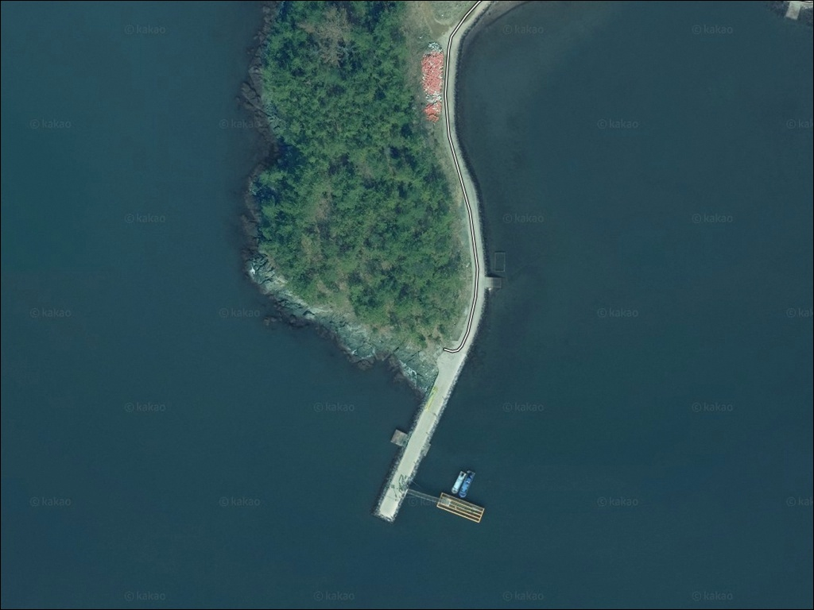
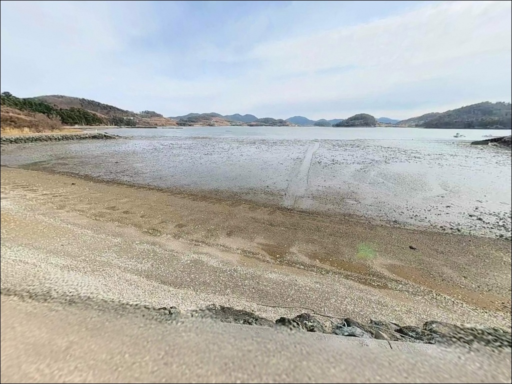
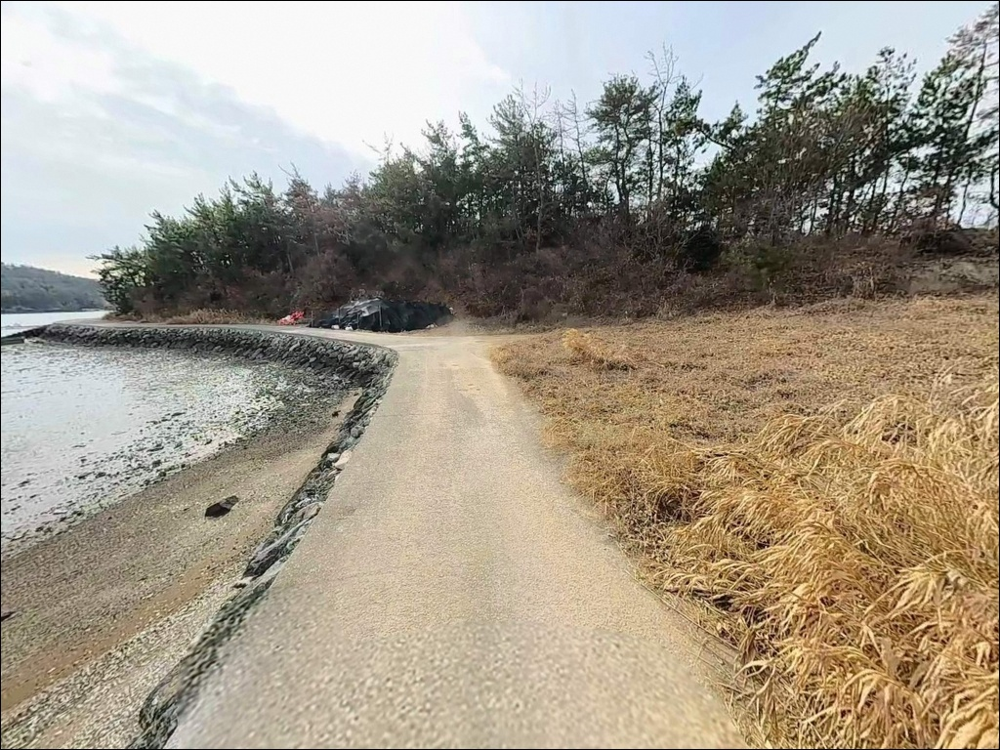
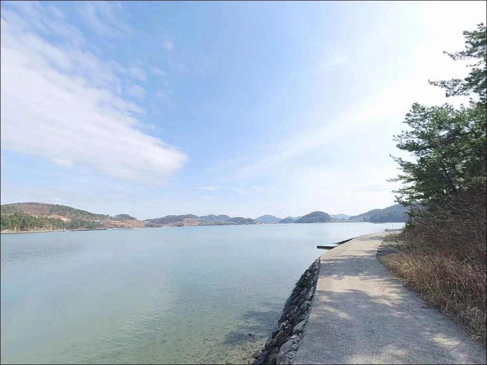
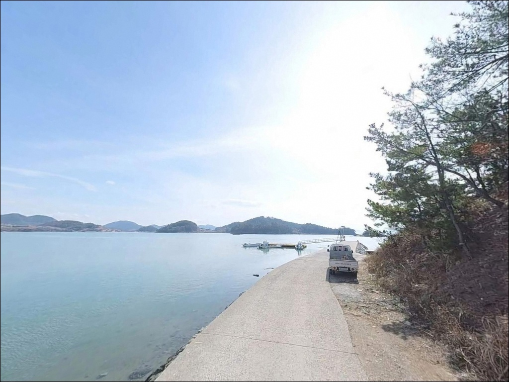
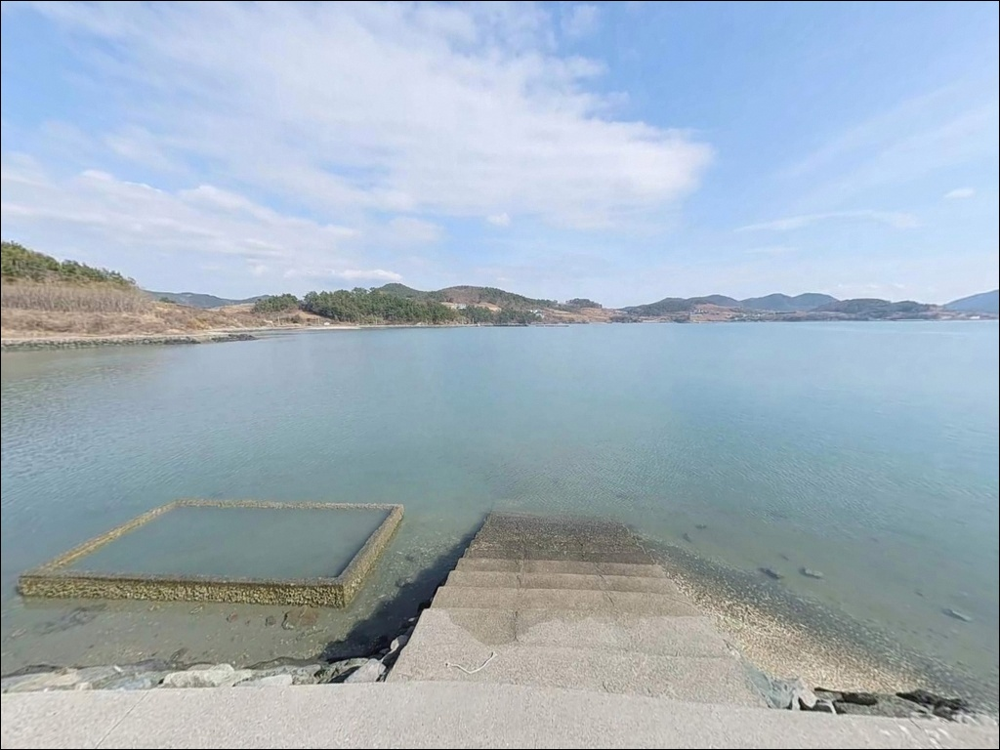
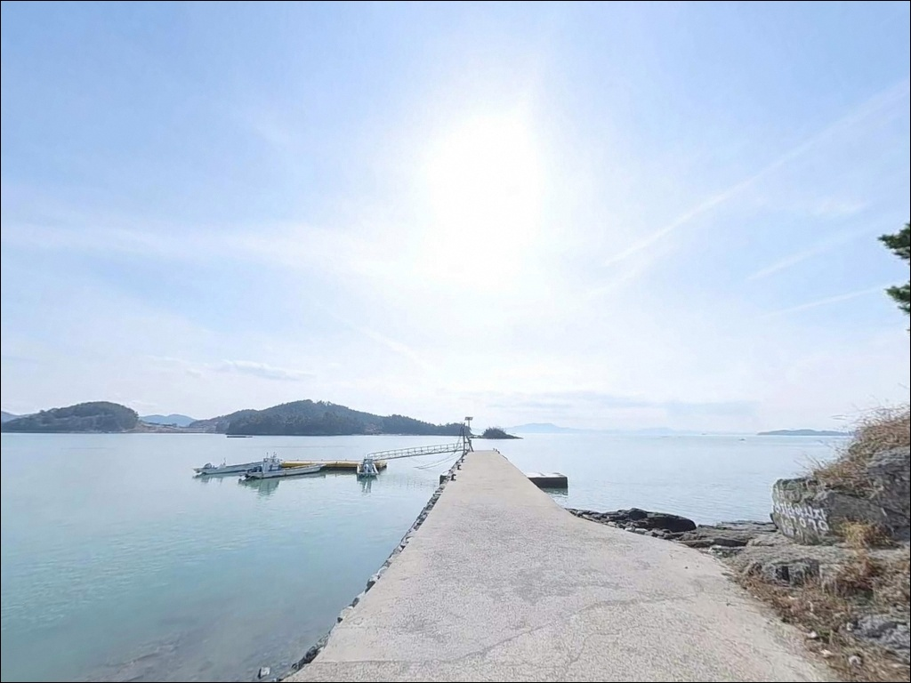
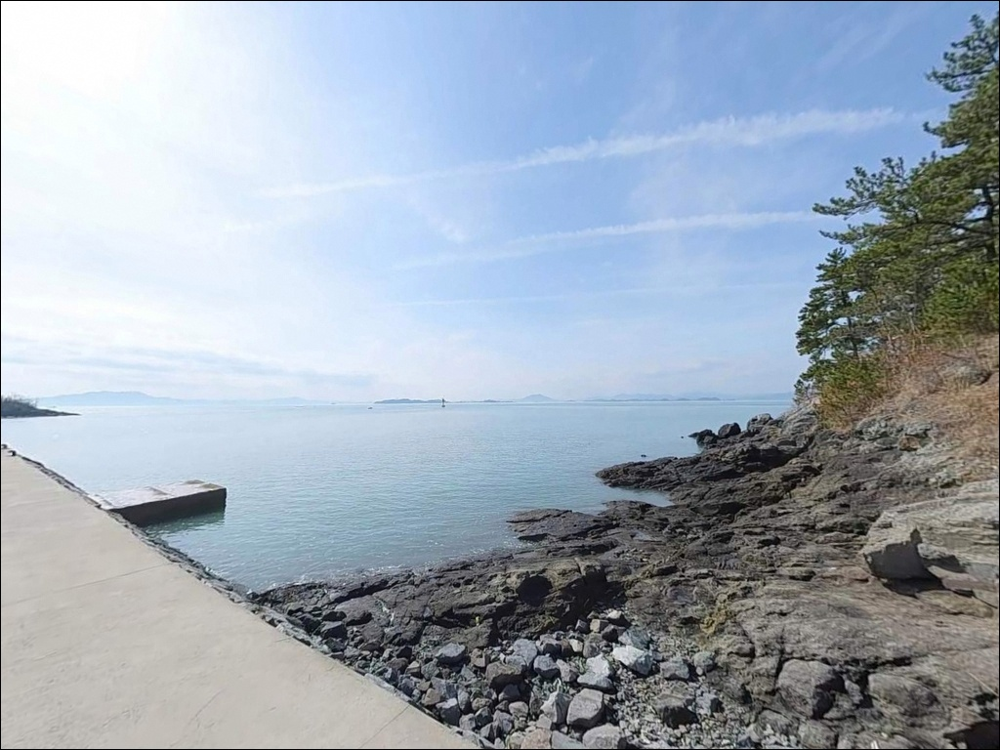
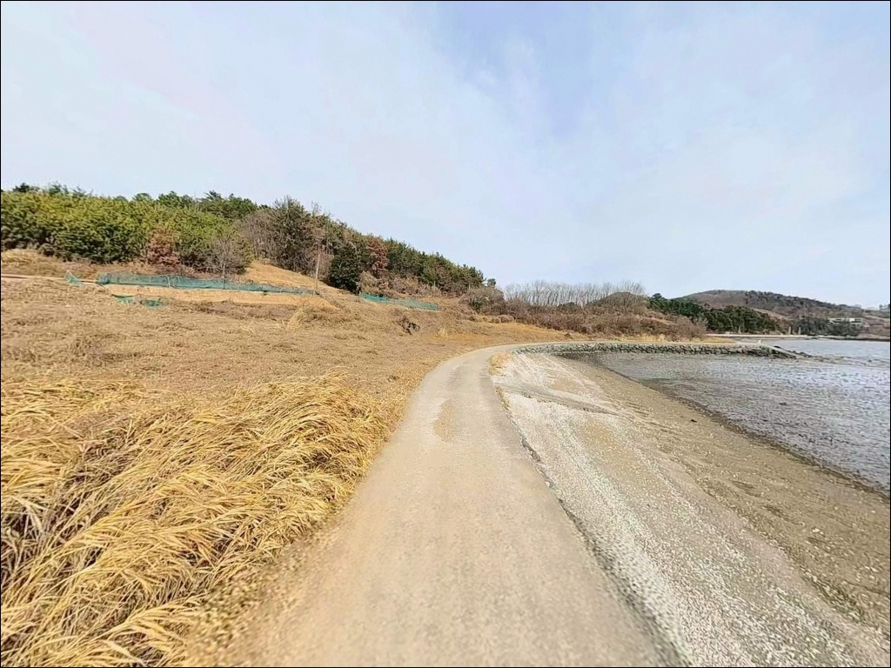

간조엔 갯벌뿐인 여수 사곡선착장, 만조 2시간 전에 맞춰 노리는 원투낚시


포인트 안내
사곡선착장
전남 여수시 소라면 사곡리 산 92-2
여자만 내만 포인트에서 가장 많이 하는 실수는
물때 확인 없이 아무 시간에나 도착하는 것입니다.
간조 시에는 선착장 끝단까지 갯벌이 넓게 드러나
어떤 채비를 써도 낚시 여건이 만들어지지 않습니다.
만조 전후 2~3시간이 사실상 전부인 포인트이므로,
도착 시각 계산이 출조 준비의 시작입니다.
사곡선착장은 여수시 소라면 서쪽 여자만 안쪽에
자리 잡은 이름 없는 작은 선착장입니다.
낚시 커뮤니티에는 거의 등록되지 않은 곳으로,
지도를 통해서만 존재를 확인할 수 있는
탐색형 포인트에 가깝습니다.
선착장 앞으로 모개도(하트섬)가 보이는
조용한 내만 해안선이 이어집니다.
이 글은 사곡선착장의 진입 환경, 물때 기준,
지형 기반 낚시 여건, 차박 체류 조건에 집중합니다.
조황 단정이나 특정 어종 보장은
이 글의 범위에 포함되지 않습니다.

1. 진입 동선과 포인트 접근성
소라면 사곡리는 여수 시내에서 북서쪽으로
차량으로 20~30분 거리에 위치합니다.
소라면 소재지 덕양리를 거쳐
사곡리 방향으로 이어지는 해안도로를 따라가면
선착장 진입로에 닿을 수 있습니다.
마지막 구간은 폭이 좁은 콘크리트 농로 수준으로,
승용차와 소형 SUV는 진입에 무리가 없습니다.
대형 차량이나 루프탑 캠퍼를 운용하는 경우라면
출발 전 위성지도로 진입로 폭과
마지막 회차 가능 지점을 먼저 확인해 두는 것이
좋습니다.
선착장 바로 앞 공터는 2~3대 수용 수준이며,
어선 이동 동선을 막지 않는 자리가 우선입니다.
산 번지 특성상 해안 경사면을 내려가는
구간이 포함될 수 있어,
야간 첫 방문 시에는 낮에 미리
진입로를 답사해 두는 편이 안전합니다.

2. 차박 환경과 야간 체류 여건
사곡선착장 일대는 민가 밀집도가 낮고
가로등이 거의 없는 구조입니다.
야간에는 차량 통행이 극히 적어
프라이버시 확보가 유리한 환경이지만,
개인 조명 장비 없이는 이동 자체가 어렵습니다.
헤드랜턴과 보조 랜턴은 필수입니다.
여자만 내만에 위치해 외해 파도 영향은 적고
바람도 상대적으로 약한 편입니다.
다만 간조 시에는 갯벌 냄새가 강해지는 환경이라,
차박을 병행할 경우 만조 타이밍에 맞춰 도착하고
낚시가 끝난 뒤 차 안에서 머무는 방식이
현실적인 운용입니다.
공식 야영·취사 가능 여부는 확인되지 않습니다.
소형 어촌 선착장 구역인 만큼
어선 접안 구간을 점거하지 않는 범위 내에서
조용하게 체류하는 것이 기본 매너입니다.


3. 주변 편의시설 및 인프라 현황
선착장 반경 3km 이내에는 편의점이나
마트를 기대하기 어렵습니다.
사곡리 마을 안쪽에 소규모 시설이
일부 있을 수 있으나,
완전 자급 체제로 진입하는 것이
기본 준비 방식입니다.
식수, 간식, 낚시 소품, 얼음은 모두
출발 전에 갖추고 가야 합니다.
소라면 소재지 덕양리까지는 차량으로
10~15분 거리입니다.
이 권역에 편의점과 식당이 집중되어 있어,
부족한 물품이 생기면
이 동선을 활용하는 방식이 현실적입니다.
응급 상황이나 주유가 필요할 경우에는
여수 죽림지구 방면으로 이동해야 합니다.

4. 물때를 중심으로 한 방문 전 준비사항
사곡선착장 방문 전에 가장 먼저 확인할 것은
물때입니다.
여자만은 조석 간만의 차가 큰 해역으로,
간조 시에는 선착장 끝단까지 갯벌이 드러납니다.
바다타임에서 소라면 기준 물때를 확인하고
만조 전 2시간~만조 후 1시간을
낚시 가능 시간대로 설정하는 것이 기본입니다.
바닥이 뻘 지형이라 채비 손실은 많지 않지만,
밑걸림보다는 채비가 갯벌에 박히는 경우가 있습니다.
원투낚시를 주력으로 한다면
구멍봉돌보다 굴림봉돌이나 납작봉돌이 유리합니다.
여분 채비와 바늘은 넉넉히 준비하는 편이 좋습니다.
간조 시 갯벌로 직접 내려가는 행위는
수렁 위험이 있어 금물입니다.
썰물이 빠른 시간대에는 이동 경로가
막힐 수 있으므로, 선착장 위에서만 낚시하는 것이
안전한 방식입니다.

5. 지형 기반 낚시 여건 분석
사곡선착장이 면한 여자만은
전형적인 내만 갯벌 해역입니다.
선착장 전면으로는 완만한 경사형 수심이 이어지며,
끝단 쪽으로 갈수록 수심이 깊어지는 구조입니다.
만조 시 기준으로 선착장 끝단 수심은 3~5m 내외로,
생활낚시 공략에 충분한 깊이가 형성됩니다.
바닥 저질은 뻘 지형이 주를 이루며,
선착장 측면 콘크리트 벽면 아래로는
소형 어류와 갑각류가 서식하기 좋은
구조가 갖춰져 있습니다.
조류는 여자만 내만 특성상 창·낙조류 모두
완만하게 흐르는 편이라,
채비 컨트롤이 비교적 쉬운 환경입니다.
이 일대 여자만 해역에서는
망둥어·붕장어·숭어·낙지 등이
계절에 따라 활동하는 해역입니다.
가을철 숭어 떼가 만 안으로 들어오는 시기와
여름~가을 야간 붕장어 시즌이
이 포인트를 활용하기 좋은 타이밍입니다.
출조 전에 소라면 일대 조황을 반드시 검색해 보시기 바랍니다.


6. 갯벌 지형에 맞는 낚시 스타일이 따로 있습니다
이 포인트에서 가장 잘 맞는 낚시는
원투낚시입니다.
뻘 바닥과 완만한 경사 지형 구조는
홍갯지렁이나 청갯지렁이를 미끼로 한
원투 채비에 적합한 조건입니다.
선착장 끝단에서 정면으로 캐스팅해
수심이 깊어지는 경계 구간을 공략하는 방식이
기본 전략입니다.
민장대·찌낚시도 이 지형에 어울립니다.
조류가 완만해 채비 운용이 쉬운 편이며,
선착장 측면 콘크리트 벽면 아래와
수로 입구 방향을 노리는 방식이 유효합니다.
가을철 숭어가 들어오는 시기에는
띄울낚시나 바닥찌 방식도 구사해 볼 수 있습니다.
루어낚시는 만조 시 수심이 충분히 확보될 때
소형 지그헤드와 웜을 활용한
라이트 루어로 선착장 주변을 탐색하는 방식이
가능합니다.
수심이 얕은 구간에서는 루어 운용 효율이
크게 낮아지므로,
수위가 높은 만조 전후 시간대에만 시도하는 것이
현실적인 방법입니다.

7. 대안 포인트와 플랜 B 동선
사곡선착장의 물때가 맞지 않거나
진입 여건이 여의치 않을 때는
같은 여자만 해안선을 따라
궁항마을 선착장이 첫 번째 대안입니다.
사곡리와 동일한 내만 지형을 공유하며
2~3km 거리로 가깝습니다.
해역 어종 패턴도 비슷해 조황 흐름을
함께 참고할 수 있는 포인트입니다.
같은 여자만 해안선에서 조금 더 이동하면
달천 방파제 방면으로 연결됩니다.
규모가 사곡선착장보다 크고
낚시 정보가 상대적으로 많이 알려진 곳으로,
처음 이 권역을 탐색하는 출조라면
달천 방파제를 먼저 확인하고
사곡선착장을 이어 탐색하는 동선이 효율적입니다.
여수 시내권으로 이동한다면
국동항 방면이 대표 생활낚시 대안입니다.
방파제 규모와 편의시설이 정비되어 있어
사곡선착장에서 낚시가 여의치 않을 경우
국동항을 플랜 B 종착지로 설정해 두면
하루 출조가 빈손으로 끝나는 상황을
줄일 수 있습니다.

물때 맞춰 찾아가면
여자만의 조용한 포인트가 기다립니다
원투낚시나 민장대 찌낚시를 즐기는 낚시인으로,
복잡하지 않은 조용한 포인트를 찾는다면
사곡선착장의 내만 구조는 잘 맞는 환경입니다.
사람이 많이 찾지 않는 만큼
자리 경쟁 없이 느긋하게 낚시를 즐길 수 있는
탐색형 포인트로서의 매력이 있습니다.
반면 물때 확인 없이 아무 시간에나 도착하거나,
가로등이 없는 환경에 준비 없이 야간 입장하면
낚시도 차박도 만족스럽지 못한 결과로 끝납니다.
물때 확인, 자급 준비, 진입로 사전 점검,
이 세 가지를 갖추고 찾아간다면
여자만의 조용한 밤을 낚시와 함께 보낼 수 있는
괜찮은 선택이 됩니다.
편의시설 없는 어촌 선착장에서
갯벌 냄새와 함께 만조를 기다리며 밤을 보내는
차박 낚시 여행자라면,
조용한 여자만 안쪽이 기억에 남는 출조지가 될 수 있습니다.